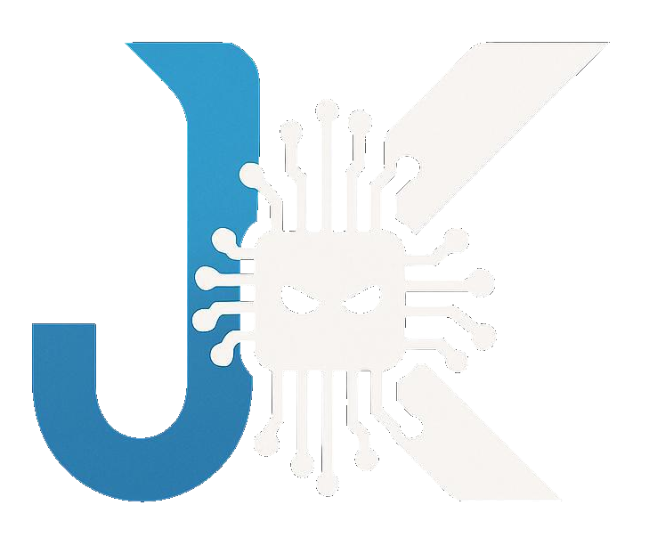

Silence AI ermöglicht Barrierefreiheit für taubstumme Personen durch ein Zusammenspiel von 5 KI-Systemen:
Unsere Mission ist es, künstliche Intelligenz **nutzbar** zu machen. Wir legen Wert auf:
Unsere aktuellen Entwicklungsbereiche umfassen: